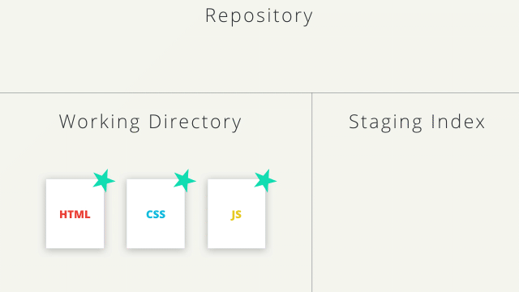

What is Version Control?
Version control is a system that records changes to a file or set of files over time so that you can recall specific versions later. For the examples in this book, you will use software source code as the files being version controlled, though in reality you can do this with nearly any type of file on a computer.
Types Of Version Control:-
There are two main types of version control system models:
- Centralized Version Control System
- Distributed Version Control System
The centralized model - all users connect to a central, master repository
The distributed model - each user has the entire repository on their computer
Note: GIT is Distributed VCS type.
Basic Terminology
Commit
Git thinks of its data like a set of snapshots of a mini filesystem. Every time you commit (save the state of your project in Git), it basically takes a picture of what all your files look like at that moment and stores a reference to that snapshot. You can think of it as a save point in a game - it saves your project's files and any information about them.
Repository
A repository is a directory which contains your project work, as well as a few files (hidden by default on Mac OS X) which are used to communicate with Git. Repositories can exist either locally on your computer or as a remote copy on another computer. A repository is made up of commits.
Working Directory
The Working Directory is the files that you see in your computer's file system. When you open your project files up on a code editor, you're working with files in the Working Directory.When working with Git, the Working Directory is also different from the command line's concept of the current working directory which is the directory that your shell is "looking at" right now.
Checkout
A checkout is when content in the repository has been copied to the Working Directory.
Staging Area / Staging Index
A file in the Git directory that stores information about what will go into your next commit. You can think of the staging area as a prep table where Git will take the next commit. Files on the Staging Index are poised to be added to the repository.
SHA
A SHA is basically an ID number for each commit.
Example:1d8e15a834a2157fe7af04421c42a893e8a1f23a
Branch
A branch is when a new line of development is created that diverges from the main line of development. This alternative line of development can continue without altering the main line.
Work-Flow
Getting Started
Basic Commands
- pwd -> used to determine working directory
- ls -> used to list files and directories
- mkdir -> used to create a new directory (it creates a new folder)
- cd -> used to change directories
- rm -> used to remove files and directories
Git Init
Running the git init command sets up all of the necessary files and directories that Git will use to keep track of everything. All of these files are stored in a directory called .git
Use the git init command to create a new, empty repository in the current directory
Git Clone
git clone is primarily used to point to an existing repo and make a clone or copy of that repo at in a new directory, at another location.
The git clone command copies an existing Git repository.
Git Status
The git status is our key to the mind of Git. It will tell us what Git is thinking and the state of our repository as Git sees it
The git status command will display a lot of information depending on the state of your files, the working directory, and the repository.
Staging Files

Git Add
The git add command is used to move files from the Working Directory to the Staging Index
Running the git add command produces no output
Git Add can be used to add files individually
Eg: $ git add index.html styles.css
To add all the files we use
Period (.)
The period refers to the current directory and can be used as a shortcut to refer to all files and directories (including all nested files and directories!).
Eg: $ git add .
It is equivalent previously used git add
Git commit
NOTE: Initial Commit is just for explanation any other commit can be used
The git commit command takes files from the Staging Index and saves them in the repository.
Git Diff
The git diff command can be used to see changes that have been made but haven't been committed, yet.
This command displays:
- the files that have been modified
- the location of the lines that have been added/removed
- the actual changes that have been made
Git Branch
It can be used to:
- list all branch names in the repository
- create new branches
- delete branches
The git branch command is used to interact with Git's branches
Creating a Branck
To create a branch, all you have to do is use git branch and provide it the name of the branch you want it to create
Git checkout
Running this command will:
- remove all files and directories from the Working Directory that Git is tracking
- go into the repository and pull out all of the files and directories of the commit that the branch points to
Git Log
The branch information in the command prompt is helpful, but the clearest way to see it is by looking at the output of git log.
Deleting A Branch
For this to work we must not be in the branch that we are deleting .So remember to change branch before deleting.
Git Merging
Combining branches together is called merging.
Git can automatically merge the changes on different branches together. This branching and merging ability is what makes Git incredibly powerful!
When a merge happens, Git will:
- look at the branches that it's going to merge
- look back along the branch's history to find a single commit that both branches have in their commit history
- combine the lines of code that were changed on the separate branches together
- makes a commit to record the merge
Modifying Changes
Changing Last Commit
If your Working Directory is clean (meaning there aren't any uncommitted changes in the repository), then running git commit --amend will let you provide a new commit message.
Alternatively, git commit --amend will let you include files (or changes to files) you might've forgotten to include
Git Revert
The git revert command is used to reverse a previously made commit
- will undo the changes that were made by the provided commit
- creates a new commit to record the change